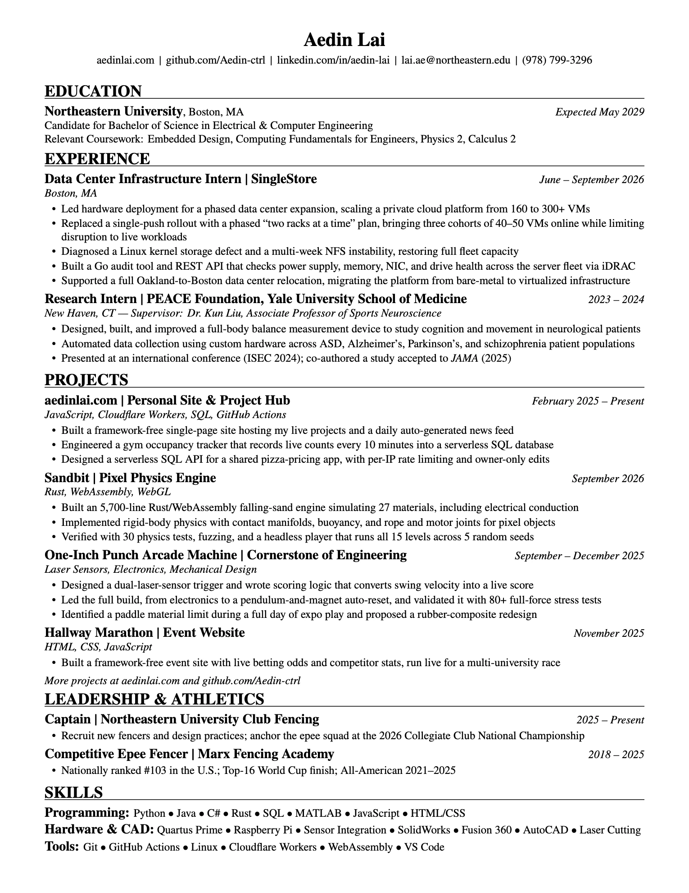

Building at the intersection of hardware and software — turning ideas into working systems.
I'm an Electrical & Computer Engineering student at Northeastern University, and a competitive epee fencer. I like working at the intersection of hardware and software — recent work spans data center infrastructure, neuroscience research hardware, and a from-scratch arcade machine.
Most recently I was a Data Center Infrastructure Intern at SingleStore, and before that a research intern at the Yale University School of Medicine, building measurement hardware for a study on cognition and movement in neurological patients.
A logic-gate designer in the browser. Drop down switches, gates and lamps, wire them together, and it runs the circuit live and works out the truth table.
Built with JavaScript and inline SVG
Things I've built, in the order I built them.
An arcade punching machine I helped build for a first-year engineering class. Laser sensors score each punch and the pendulum resets itself.
Built with laser sensors, a hand-built wooden frame and scoring software — Fall 2025
A falling-sand sandbox with sand, water, fire, lava and electricity, plus objects that float, burn and shatter.
Built in Rust, compiled to WebAssembly, drawn with WebGL — 2026
Tracks your hands through the webcam, then lets you use them in six small demos: ASL letters, molecules, marble runs, a theremin, drums and lightning.
Built with JavaScript. Hand tracking from Google's MediaPipe, sound from the Web Audio API — 2026
Reads your face and fingers through the webcam and tells you which emoji or hamster meme you match.
Built with JavaScript. Face and gesture tracking from Google's MediaPipe — 2026
Build logic circuits out of switches, gates and lamps and watch them run. It works out the truth table for you, and a whole design saves into the link.
Built with JavaScript and inline SVG. The simulator settles the circuit the way real gates do, so latches and flip-flops hold state — 2026
Four small games running on one engine I wrote myself, with no libraries and no image or sound files.
Built with JavaScript. Every pixel and every sound is generated while the game runs — 2026
Tracks calories and protein for me and my friends. Pick a person, look up a food, keep a daily total.
Built with JavaScript. Started as a Python/Flask app on a Raspberry Pi
An event site for a hallway race between a few universities, with live odds and competitor stats. I updated it during the race.
Built with HTML, CSS and JavaScript
Ten card-game and casino practice tools in one place: blackjack, poker, baccarat, craps, roulette and mahjong.
Built with HTML, CSS and JavaScript
Shows how busy Northeastern's gym is, room by room, and saves the count every 10 minutes so you can see the quiet times.
Built with JavaScript and GitHub Actions. Counts scraped from the gym's own page — 2026
Works out a pizza's price per square inch for any shape, size or deal, and compares it against a shared list.
Built with JavaScript, Cloudflare Workers and SQL — 2026
Draw something and it works out what you drew, then your own lines get up and move around.
Built with JavaScript. Drawing recognition from DoodleNet, trained on Google's Quick, Draw! data — 2026
A serial story set after a satellite collision closes off the sky, posted one episode at a time. Each episode is written, voiced and cut without me in the loop.
Built with JavaScript. Script, narration and images generated, video assembled with ffmpeg — 2026
The page on the left. On the right, what the bullets had no room for.

Northeastern University, Boston, MA. Expected May 2029. Candidate for Bachelor of Science in Electrical and Computer Engineering. Relevant coursework: Embedded Design, Computing Fundamentals for Engineers, Physics 2, Calculus 2.
Data Center Infrastructure Intern, SingleStore, Boston, MA, June to September 2026. Led hardware deployment for a phased data center expansion, scaling a private cloud platform from 160 to 300 plus VMs. Replaced a single-push rollout with a phased two-racks-at-a-time plan, bringing three cohorts of 40 to 50 VMs online while limiting disruption to live workloads. Diagnosed a Linux kernel storage defect and a multi-week NFS instability, restoring full fleet capacity. Built a Go audit tool and REST API that checks power supply, memory, NIC and drive health across the server fleet via iDRAC. Supported a full Oakland-to-Boston data center relocation, migrating the platform from bare-metal to virtualized infrastructure.
Research Intern, PEACE Foundation, Yale University School of Medicine, New Haven, CT, 2023 to 2024. Supervisor: Dr. Kun Liu, Associate Professor of Sports Neuroscience. Designed, built and improved a full-body balance measurement device to study cognition and movement in neurological patients. Automated data collection using custom hardware across ASD, Alzheimer's, Parkinson's and schizophrenia patient populations. Presented at an international conference, ISEC 2024, and co-authored a study accepted to JAMA in 2025.
aedinlai.com, personal site and project hub, February 2025 to present. JavaScript, Cloudflare Workers, SQL, GitHub Actions. Built a framework-free single-page site hosting live projects and a daily auto-generated news feed. Engineered a gym occupancy tracker that records live counts every 10 minutes into a serverless SQL database. Designed a serverless SQL API for a shared pizza-pricing app, with per-IP rate limiting and owner-only edits.
Sandbit, pixel physics engine, September 2026. Rust, WebAssembly, WebGL. Built a 5,700-line Rust and WebAssembly falling-sand engine simulating 27 materials, including electrical conduction. Implemented rigid-body physics with contact manifolds, buoyancy, and rope and motor joints for pixel objects. Verified with 30 physics tests, fuzzing, and a headless player that runs all 15 levels across 5 random seeds.
One-Inch Punch Arcade Machine, Cornerstone of Engineering, September to December 2025. Laser sensors, electronics, mechanical design. Designed a dual-laser-sensor trigger and wrote scoring logic that converts swing velocity into a live score. Led the full build, from electronics to a pendulum-and-magnet auto-reset, and validated it with 80 plus full-force stress tests. Identified a paddle material limit during a full day of expo play and proposed a rubber-composite redesign.
Hallway Marathon event website, November 2025. HTML, CSS, JavaScript. Built a framework-free event site with live betting odds and competitor stats, run live for a multi-university race.
Captain, Northeastern University Club Fencing, 2025 to present. Recruits new fencers and designs practices; anchors the epee squad at the 2026 Collegiate Club National Championship.
Competitive Epee Fencer, Marx Fencing Academy, 2018 to 2025. Nationally ranked 103 in the U.S.; Top-16 World Cup finish; All-American 2021 to 2025.
Programming: Python, Java, C#, Rust, SQL, MATLAB, JavaScript, HTML/CSS. Hardware and CAD: Quartus Prime, Raspberry Pi, sensor integration, SolidWorks, Fusion 360, AutoCAD, laser cutting. Tools: Git, GitHub Actions, Linux, Cloudflare Workers, WebAssembly, VS Code.
The fastest way to reach me is email — I check it more than anything else. Either address reaches me; school is best for anything formal.
Experience, education, and leadership in one page.
Electrical & computer engineering — embedded systems, hardware bring-up, infrastructure. Happy to talk before then.
Things I keep coming back to, parked somewhere I can find them.
You found it.
What this site, LectureNotes and typr do with your information. Short version: almost nothing.
Last updated September 28, 2026
~/Documents/LectureNotes (on Windows, Documents\LectureNotes). Answers from the free on-device AI model are also produced on your computer. A small log of when Claude calls succeeded or failed is kept in ~/Library/Logs/LectureNotes (on Windows, %LOCALAPPDATA%\LectureNotes\Logs, next to a troubleshooting log of app errors that also never leaves your PC).~/Library/Application Support/typr).This site isn't directed at children under 13. If anything here changes, this page will be updated. Questions: lai.ae@northeastern.edu.
The ground rules for this site, LectureNotes and typr.
Last updated September 28, 2026
This is a personal portfolio. Everything on it is provided for general information, as is. The writing, design and drawings are © Aedin Lai unless noted otherwise.
THIRD_PARTY_NOTICES.txt in its download. The audio driver, Ollama and the AI models are downloaded from their publishers during setup and are covered by their own licenses.These terms are governed by the laws of the Commonwealth of Massachusetts. They may change, and this page will show the latest version. Questions: lai.ae@northeastern.edu.